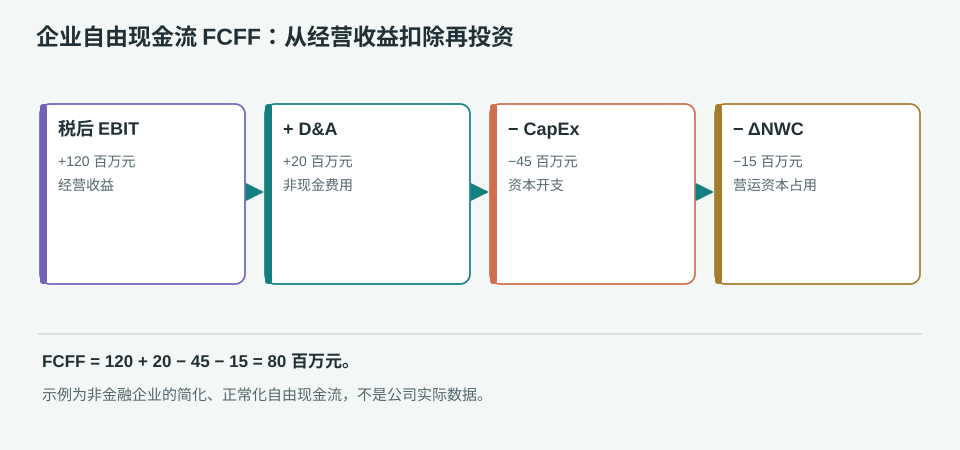
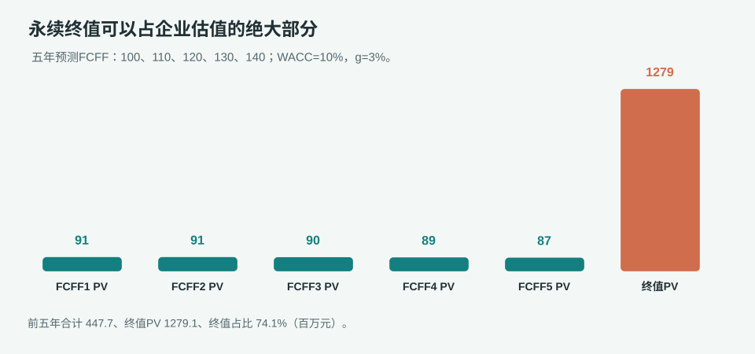
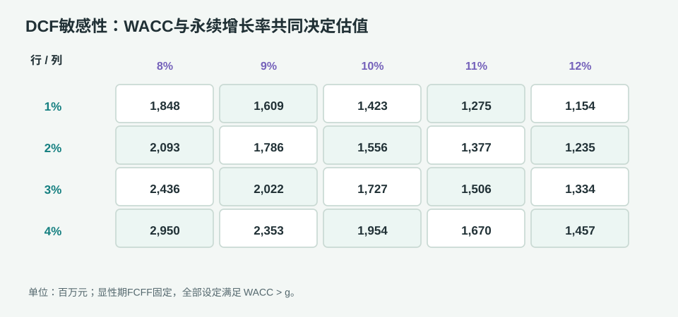

CHAPTER 08 · CASH FLOW VALUATION
DCF：自由现金流、资本成本与终值敏感性
一家公司值多少钱，取决于未来可提供的现金及其风险。用可以手工复算的五年模型，理解FCFF、WACC与终值幻觉。
收入增长，为什么企业的内在价值仍可能下降？
投资者买入的不是利润表里的“增长百分比”，而是企业未来能够留给资本提供者的现金流。若收入增长需要持续投入设备、存货和应收账款，那么自由现金流可能长期小于净利润；如果融资风险升高，投资者要求的回报率还会增大。现金流贴现模型（DCF）把这两个问题放在同一张表中。
DCF不是“精确计算股票明天的价格”，而是用有条件的现金流预测与风险假设评价当前价格的合理性。好的模型会显示增长、资本投入、利润率、折现率与终值的影响，而不是用一个“精确到分”的数遮蔽参数不确定性。
FCFF计算：营业利润不等于可供资本提供者的现金
对一般非金融企业，从税后息税前利润起算是常见的FCFF估计途径：税后EBIT + 折旧摊销 − 资本开支 − 非现金经营性营运资本净增加。折旧摊销属于非现金费用，但未来设备维护仍需要资金，因此不能只加回折旧而忘记资本开支。

另一条路径是从经营现金流CFO出发，但真实报表的利息与税费分类可能不同，不能无调整地把CFO−CapEx认作FCFF。对企业自由现金流和股权自由现金流分别估值时，要严格定义提供资金的人是谁，以及现金在偿付债务前还是之后。
企业价值与股权价值：配错折现率就会重复扣债
FCFF可供债权人和股权人等资本提供者，因此与其匹配的贴现率通常为WACC，计算结果是企业经营价值。FCFE在考虑融资与还本后属于普通股股东，通常用股权要求回报率Ke折现。两种估值路径在口径和假设一致时应可互相校验，但中间各自需要不同的调整。
| 方法 | 现金流对象 | 贴现率 | 直接计算出 |
|---|---|---|---|
| FCFF | 企业的资本提供者 | WACC | 企业价值 EV |
| FCFE | 普通股股东 | Ke（股权资本成本） | 普通股股权价值 |
| DDM | 预计支付的普通股股利 | Ke | 普通股股权价值 |
如果已用FCFF/WACC算出企业价值，接下来要扣除有息债务与其他优先索取权，加回可供普通股股东使用的非经营现金或其他非经营资产，再按稀释后的股数计算每股价值。反过来若已经对FCFE贴现，就不能再机械重复扣除债务。
WACC：资本成本为何不是一条市场利率
常见非金融公司简化WACC由股权和债务的市场价值权重组成。债务利息在适用条件下有抵税效应，所以税后债务资本成本通常用Kd(1−T)表达；股权要求回报不同于公司承诺支付的固定票息。
设股权价值占80%，债务价值占20%，股权成本11%，税前债务成本5%，税率25%，WACC=0.8×11%+0.2×5%×(1−25%)=9.55%。这是一道计算题，不代表某一真实公司的资本成本。若债务成本随杠杆提高、权益风险溢价随财务脆弱性上升，就不能假设增加负债一定能降低WACC。
完整五年DCF：终值为何成为最大的假设
假设虚构企业未来五年FCFF分别为100、110、120、130、140百万元，WACC为10%，第五年以后稳定增长3%。第六年的FCFF=140×1.03=144.2百万元。第五年末的永续增长终值为144.2/(0.10−0.03)=2,060百万元，再把它从第五年末折回估值时点。
前五年现金流的现值合计约447.70百万元，终值现值约1,279.10百万元，企业价值约1,726.79百万元；其中约74.1%来自终值。也就是说，最显眼的“计算结果”其实大部分由五年后的状态决定。

敏感性分析：一个折现率假设可以改变全部结论
只要现金流和未来增长不变，WACC越高企业价值一般越低；只要WACC保持不变且大于g，永续增长率越高终值越大。最危险的情形是WACC与g非常接近：分母趋近零会让终值变得异常大，数值上虽可计算，经济上却可能毫无可信度。

稳态增长不只是销售额年增几个百分点，企业还需要再投资。若长期ROIC没有改善而增长需要不断增加投入，FCFF未必以营业利润的速度持续增加。应同步检验增长率、资本回报率、再投资率与竞争结构能否相容，而不是凭希望提高g。
从EV走到每股价值：债务、现金与稀释
沿用上面1,726.79百万元的企业价值。假设有息债务市场价值400百万元、需扣除的优先或少数权益为0、可加回的非经营现金100百万元，则普通股股权价值=1,726.79−400+100=1,426.79百万元。如果稀释后普通股共100百万股，模型每股价值约14.27元。
实际项目必须核对现金是否受限、租赁债务、非经营投资、优先股、期权、可转债以及股份摊薄；企业价值不能与市值直接比较而不做桥接。银行等金融企业把借款视为经营体系的一部分，传统FCFF/WACC模型往往不如股权估值框架直观。
把模型变成可审计的假设而不是单个答案
复核流程
- 确保现金流对谁开放、贴现率对谁定价，两者匹配。
- 对照财务报告，核对EBIT、税收、折旧、资本开支与营运资本。
- 把显性期增长、利润率和资本投入与行业竞争结构结合。
- 计算终值占比，测试WACC、g和关键经营参数变化时价值的区间。
- 将EV桥接至普通股股权，检查有息债务、现金与股份稀释。
为什么“公司未来增长20%”不能直接写成“FCFF永远增长20%”？为什么终值占比过大时，给出小数点后两位的每股价值反而容易误导？如果能用模型假设和资金口径解释这两个问题，就已掌握DCF的关键。
权威资料和模型边界
估值机制以CFA Institute与NYU Stern的相关教学材料核对。数字无外部市场预测含义，模拟常规非金融企业，具体会计处理和企业资本结构需要单独调整。